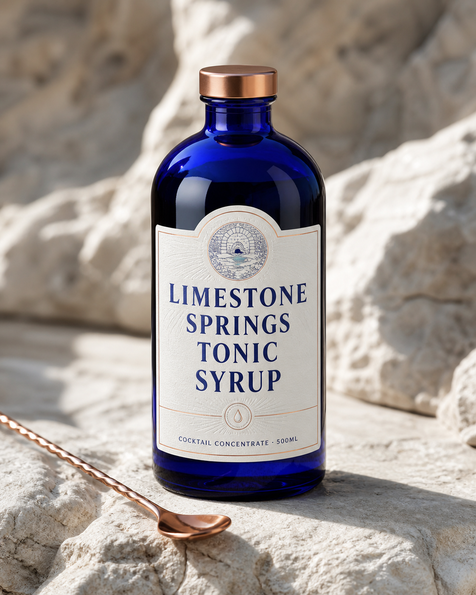

cocktail concentrate
Tonic Syrup
A premium cocktail concentrate made with Kentucky limestone-filtered water for professional and home custom tonic.
- Formats
- 500ml bottle
- Position
- high premium
- Best for
- professional and home custom tonic
Taste & texture
Built to finish clean.
The water connection is geological and truthful. We do not claim this product comes from a bourbon barrel or the Hatfield distillery pipe.
- 01citrus peel
- 02quinine
- 03botanical spice